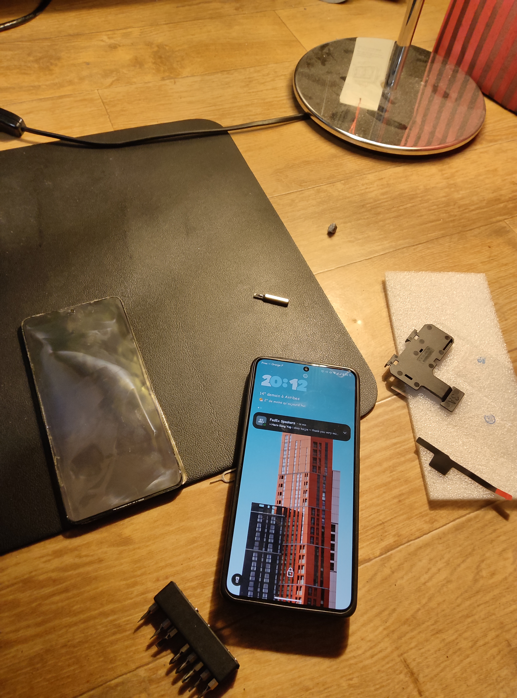
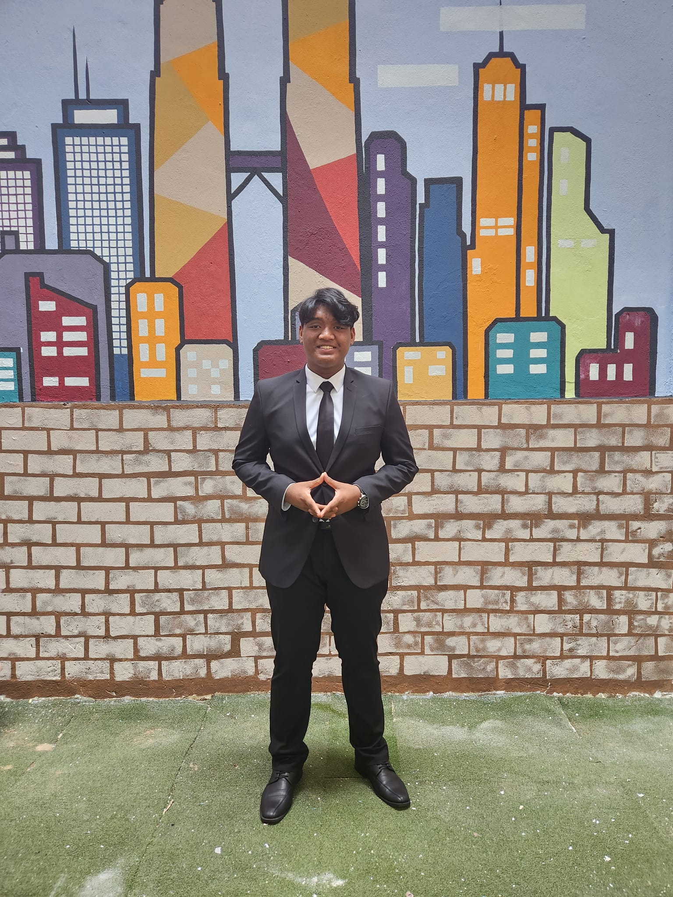
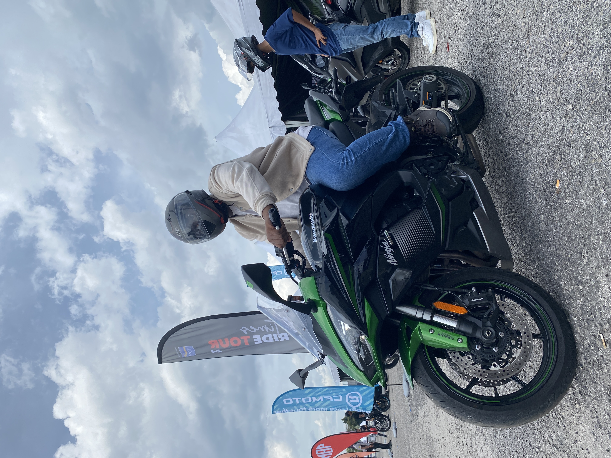
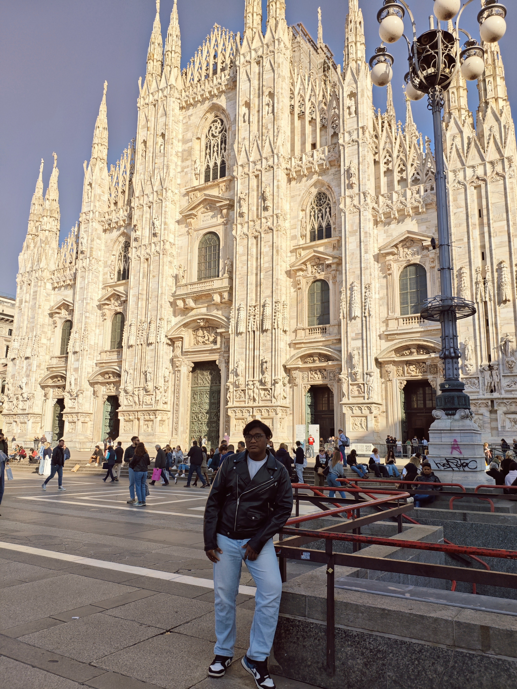
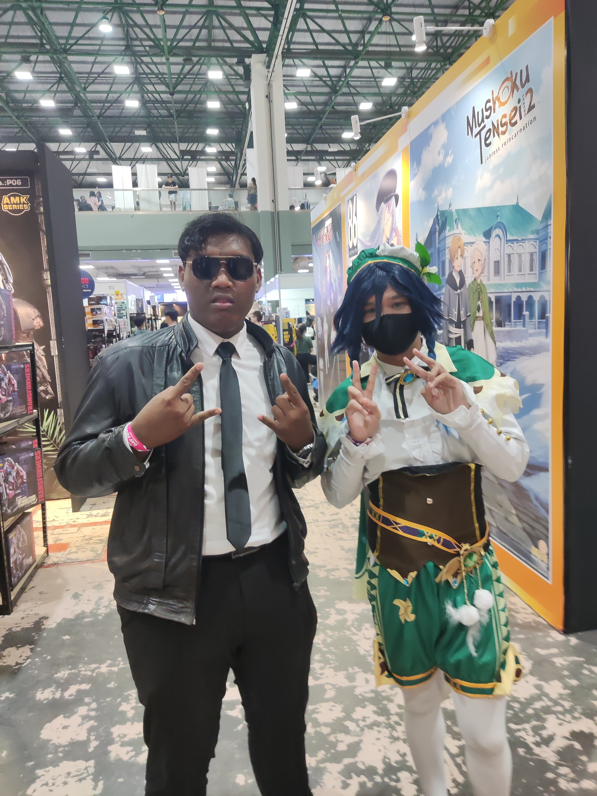
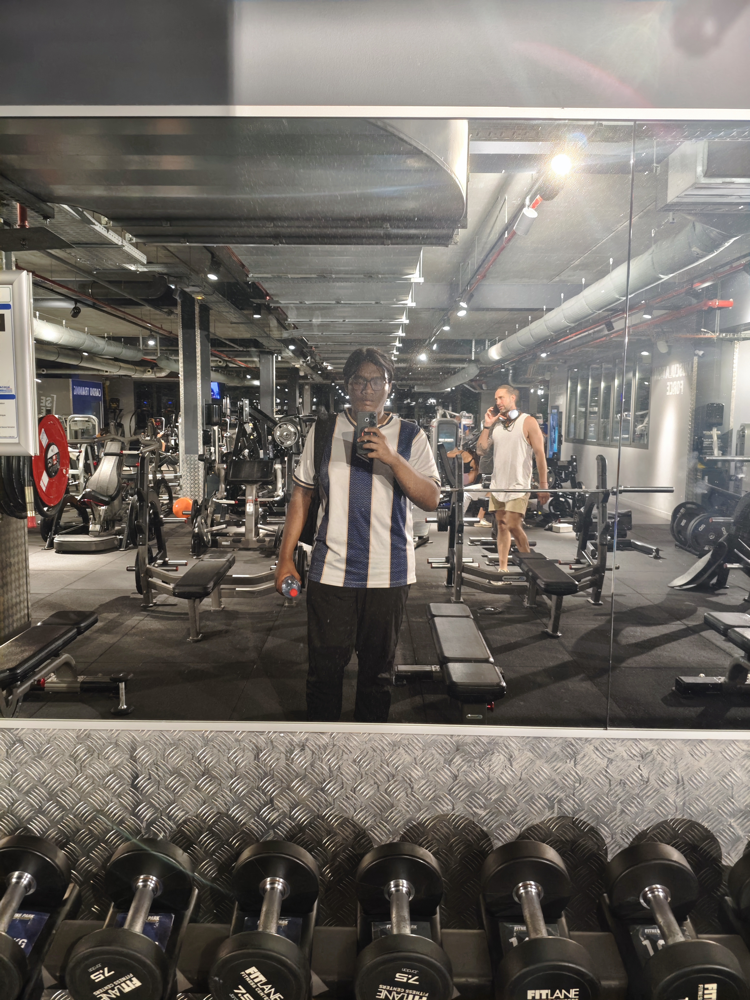

N'hésitez pas à me contacter, je vous répondrai dans les meilleurs délais. Bonne visite !
INFOS
Téléphone : 07 59 52 69 64
Email : fadlanharisxd@gmail.com
Adresse du site : fadlanharis.pf22-minecraft.net
Date de naissance : 14/07/2005, nationalité malaisienne
Permis de conduire : B (500cc+ pour les motos) & D (voitures à transmission manuelle et automatique)
PROFIL
🌟 Bonjour ! Je m'appelle Muhammad Fadlan BIN MOHD HARIS, étudiant en 2ème année de Bachelor Universitaire de Technologie Réseaux et Télécommunications à l'IUT Nice Côte d'Azur, site de Sophia Antipolis. Je suis un étudiant étranger qui vient de Malaisie.
🎓 Je suis passionné par les technologies de l'information et de la communication, et je m'efforce d'acquérir des compétences solides dans ce domaine. Mon objectif est de devenir un professionnel compétent et polyvalent, capable de relever les défis technologiques actuels.
💻 En dehors de mes études, je suis également passionné de jeux vidéo et de programmation. J'aime explorer de nouvelles technologies et apprendre constamment pour améliorer mes compétences.
🔍 Curieux et toujours en quête d'apprentissage, je suis à la recherche de nouvelles opportunités pour grandir et apporter ma contribution. N'hésitez pas à me contacter pour échanger sur d'éventuelles collaborations !
EXPÉRIENCES PROFESSIONNELLES
Depuis 2021
Réparation de matériel électronique | Indépendant
Réparation de téléphones portables, tablettes et ordinateurs.
Diagnostic et résolution de problèmes matériels et logiciels.
Conseil aux clients sur l'entretien et la prévention des pannes.
Gestion des stocks de pièces détachées et d'outils de réparation.
Formation continue sur les nouvelles technologies et les tendances du marché.
Cette expérience m'a permis de développer mes compétences techniques en électronique et en informatique, ainsi que ma capacité à résoudre des problèmes de manière autonome.

FORMATION
2024 - Présent
BUT Réseaux et Télécommunications | IUT Nice Côte d'Azur, Sophia Antipolis
Actuellement étudiant en BUT Réseaux et Télécommunications, je développe des compétences techniques et pratiques dans les domaines des réseaux informatiques, des télécommunications, et de la cybersécurité. Ce programme me permet d'acquérir une expertise approfondie et de me préparer à une carrière dans les technologies de l'information et de la communication.
2023 - 2024
Programme préparatoire aux écoles d’ingénieur en France | UniKL MFI (Institut Franco-Malaisien)
Durant cette année préparatoire, j'ai renforcé mes compétences académiques et linguistiques pour intégrer un programme universitaire en France. J'ai réussi à obtenir les certifications DELF A2 et DELF B1, attestant de mon niveau de maîtrise de la langue française. Cette expérience m'a permis de m'adapter à un environnement éducatif exigeant et multiculturel.

2018 - 2022
Sijil Pelajaran Malaysia (SPM) | MRSM Gemencheh
Le SPM, équivalent du baccalauréat scientifique en France, m'a permis de développer une solide base en sciences et en mathématiques. J'ai obtenu le niveau CEFR B2 en anglais, démontrant une maîtrise avancée de la langue. Cette formation m'a également préparé à poursuivre des études supérieures dans des domaines techniques et scientifiques.
COMPÉTENCES
Compétences techniques
Réseaux
Connaissance des protocoles TCP/IP, UDP, ICMP, ARP, etc.
Configuration de routeurs et de commutateurs Cisco
Gestion des réseaux locaux (LAN) et étendus (WAN)
Analyse de la sécurité des réseaux et mise en place de mesures de protection
Utilisation d'outils de diagnostic réseau (Wireshark, traceroute, ping)
Utilisation des logiciels Cisco Packet Tracer / GNS3
Télécommunications
Compréhension des systèmes de communication
Connaissance des technologies de téléphonie IP (VoIP)
Configuration et gestion des équipements de télécommunication (Linphone, Asterisk)
Analyse des performances des réseaux de télécommunications
Connaissance des normes et réglementations en matière de télécommunications
Programmation
Langages de programmation : Python, JavaScript, HTML, CSS, PHP, Bash
Développement d'applications web et mobiles
Connaissance des bases de données (MySQL, MariaDB)
Utilisation de frameworks et bibliothèques (React, Node.js)
Compétences comportementales
Soft-skills
Capacité à travailler en équipe et à collaborer efficacement
Excellentes compétences en communication écrite et orale
Capacité d'adaptation et flexibilité face aux changements
Résolution de problèmes et pensée critique
Gestion du temps et des priorités
Compétences linguistiques
Langues
Français : DELF Niveau B2
Anglais : CEFR Niveau B2
Malaisien : Langue maternelle
Communications
Formation à la prise de parole en public et apprentissage des codes pour communiquer efficacement à l'écrit et à l'oral
RÉSEAUX
S'initier aux réseaux informatiques
Projet universitaire de 1ère année
Dans le cadre d’un projet universitaire captivant, j’ai eu l’occasion d’analyser en détail le fonctionnement de mon réseau domestique, révélant toute la complexité et les subtilités de son architecture.
Cette aventure m’a permis de développer des compétences concrètes en réseaux, d’approfondir ma compréhension des protocoles et d’explorer des outils professionnels d’analyse et de diagnostic.
Je vous invite à découvrir l’ensemble de mon travail à travers mes deux rapports complets, ainsi que des vidéos explicatives qui vous guideront pas à pas dans mes démarches et mes conclusions.
Catégorie : Réseaux
Notions utilisées : IPv4, Windows, Linux, SSID, protocoles, réseau local
Dans le cadre d’un projet universitaire, j’ai eu l’occasion d’étudier en profondeur les propriétés du câble coaxial, un support clé pour la transmission de signaux numériques. Cette exploration, mêlant théorie et application pratique, m’a permis de mieux comprendre son fonctionnement, ses avantages et ses limites dans le domaine des télécommunications.
Cette expérience m’a apporté des connaissances solides sur l’atténuation du signal et les principes de la transmission filaire, tout en développant mon esprit d’analyse scientifique.
Pour découvrir l’ensemble de mon travail, je vous invite à consulter mon rapport détaillé qui vous guidera à travers les différentes étapes de cette étude.
Catégorie : Télécommunications
Notions étudiées : Histoire et caractéristiques du câble coaxial, atténuation du signal, transmission filaire
Logiciel et matériels utilisés : MATLAB, câble coaxial, oscilloscope, multimètre
Dans le cadre d’un projet universitaire enrichissant, j’ai eu l’opportunité de concevoir, en collaboration avec un ami, un site web dédié à la recherche de paroles de chansons, une thématique qui nous passionne.
Cette expérience m’a permis de développer mes compétences en programmation web, notamment en HTML5 et CSS3, qui ont servi de base à la réalisation du site. J’ai également appris à structurer une interface utilisateur intuitive et à rendre la navigation agréable pour l’utilisateur.
Je vous invite à découvrir notre site de recherche de paroles, fruit de notre travail et de notre passion commune pour la musique et le développement web.
Dans le cadre de ce projet universitaire, j'ai développé un site web dynamique permettant la gestion et l'affichage de données utilisateurs grâce à l'utilisation de PHP et MySQL.
Ce projet m'a permis de découvrir le fonctionnement des applications web côté serveur, d'apprendre à manipuler une base de données, et de mettre en place des formulaires interactifs pour la saisie et la modification d'informations. J'ai également veillé à la sécurité des échanges et à la validation des données côté serveur.
Cette expérience a renforcé mes compétences en développement full-stack et m'a donné une vision concrète de la création d'applications web dynamiques, de la conception à la mise en ligne.
Dans le cadre d’un projet personnel, j’ai entrepris le déploiement complet d’un serveur Minecraft afin de permettre à mes amis et moi de jouer ensemble dans un environnement personnalisé et sécurisé. J’ai configuré le serveur en utilisant Spigot et PaperMC, ce qui m’a permis d’installer et de gérer différents plugins pour enrichir l’expérience de jeu (gestion des permissions, mini-jeux, sauvegardes automatiques, etc.).
Pour rendre le serveur accessible sans adresse IP publique, j’ai mis en place Tailscale afin de créer un réseau privé virtuel sécurisé entre tous les participants. Ce projet m’a permis de développer des compétences en administration système, en gestion de réseau, et en résolution de problèmes liés à l’hébergement de services en ligne. J’ai également documenté la procédure d’accès pour les nouveaux joueurs.
Cette expérience m’a offert une vision concrète de la gestion d’un service en ligne, de la sécurité réseau, et de la collaboration technique autour d’un projet ludique.
Catégorie : Système, Programmation
Notions utilisées : Java, Bukkit, plugins
Logiciels utilisés : Spigot, PaperMC, Tailscale
×
Accès au serveur Minecraft
Pour rejoindre le serveur, vous devez être invité sur mon réseau Tailscale.
Veuillez renseigner votre email pour recevoir une invitation.
Merci ! Votre demande a été envoyée. Je vous contacterai rapidement.
Se sensibiliser à l'hygiène informatique et à la cybersécurité
Projet universitaire de 1ère année
Dans le cadre de ce projet universitaire, j’ai mené une recherche sur les cyberattaques récentes ayant touché de grandes entreprises, en me concentrant notamment sur la fuite de données subie par Free Mobile en 2024. J’ai analysé les causes et les conséquences de cet incident, ainsi que les méthodes utilisées par les attaquants.
À partir de cette étude de cas, j’ai proposé des recommandations concrètes en matière de bonnes pratiques pour renforcer la sécurité informatique et limiter les risques de fuite de données. Ce travail m’a permis de mieux comprendre les enjeux actuels de la cybersécurité et l’importance d’une hygiène numérique rigoureuse, aussi bien pour les entreprises que pour les particuliers.
Catégorie : Cybersécurité
Notions utilisées : Sécurité des données, protection des informations personnelles
Logiciels utilisés : Canva, Google (pour effectuer des recherches)
Voici une sélection de mes projets réalisés dans le cadre de mes études ou de mes initiatives personnelles. Chaque projet met en avant mes compétences techniques et ma capacité à résoudre des problèmes concrets.
Mes projets
MES CENTRES D'INTÉRÊT

Moto sportive
Passionné par les motos sportives, j'aime explorer les routes et ressentir l'adrénaline.

Voyage
Découvrir de nouveaux endroits, cultures et paysages est une source d'inspiration pour moi.

Cosplay
Créer et incarner des personnages de fiction est une activité qui stimule ma créativité.

Gym
Je m'entraîne régulièrement pour rester en forme et améliorer ma santé physique.